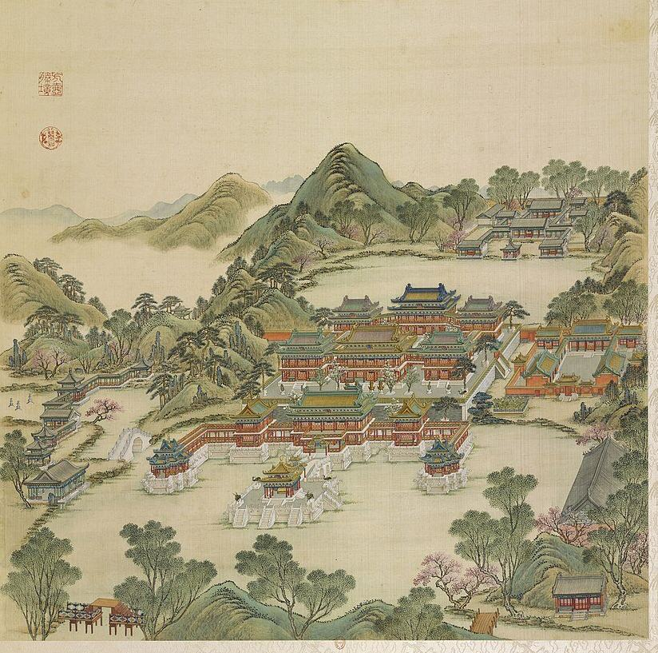
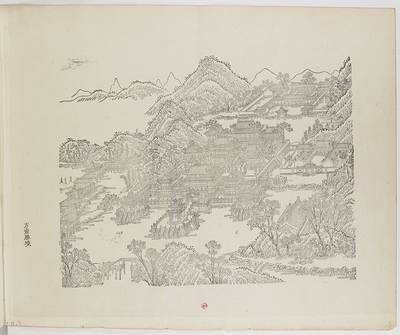
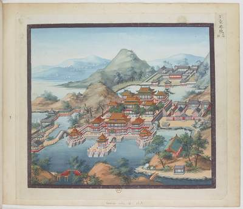
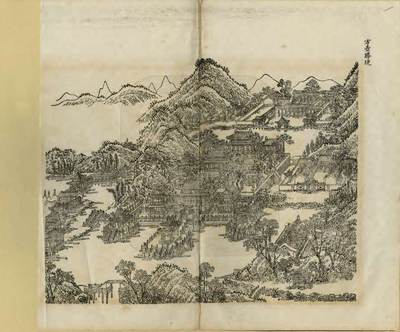
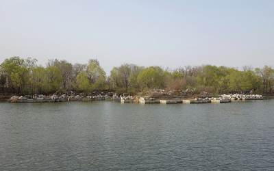
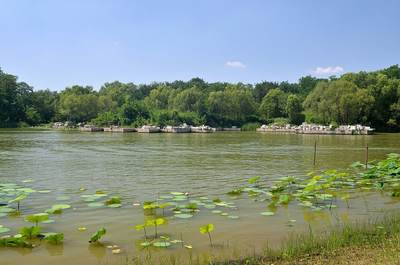
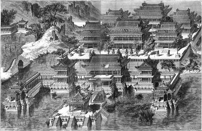
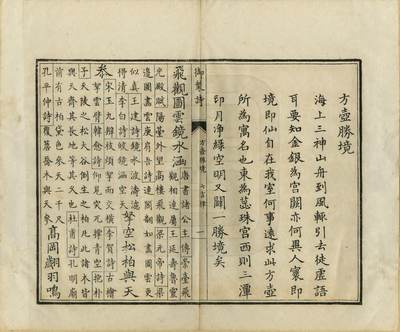

方壶胜境


概况
方壶胜境以海上三神山之一“方壶”为名（E1842），位于圆明园东北部（S02 p.63），其前湖南端以狭窄水口与福海相通（S02 p.93）。据《日下旧闻考》，四宜书屋之东临池楼宇为方壶胜境，上下各五楹，南建坊座二；其北楼宇为哕鸾殿，又北为琼华楼；哕鸾殿东为蕊珠宫，宫南有船坞，后有龙王庙（S05 j82:12a-13a, E1847）。Malone（1934）记其主体建于砖砌方台之上，台上楼阁皆二层，以飞廊相连，台前临湖另有三座二层楼和三座伸入湖中的石台（S02 pp.92-93）。乾隆五年（1740）御书铜镀金字匾二十面（S310）。1860年10月18日至19日英军奉额尔金之命焚园，此处殿宇亦毁（S02 pp.187-188）；民国时期残存的砖石遗构又多被拆运（S02 p.218）。今存台基遗址（S03）。
1744年四十景图及御制诗序
四十景图第二十九景（P0029）。乾隆帝诗序说，海上三神山“舟到風輒引去”，不过妄语；“要知金銀為宫闕亦何異人寰即境即仙自在我室何事逺求”，并记其东为蕊珠宫，西为三潭印月（S40, E1842; S05 j82:13a）。诗首句云“飛觀圖雲鏡水涵”，写楼阁倒映水中、松柏参天。
1860年以前的变化
Plans: 样042-2 方壶胜境北路 (NLC, 637x562 mm, ink and light colour, presentation sheet, late Daoguang; E1855) and the elevation sheet of the copper dragon and phoenix (E1856, shown at the NLC 典籍博物馆, no catalogue data). The record lists the twenty gilt-copper plaques written in 乾隆五年三月 (1740) and hung that tenth month: 迎薰亭, 集瑞亭, 凝祥亭, 宜春殿, 锦绮楼, 翡翠楼, 哕鸾殿, 碧云楼, 紫霞楼, 琼华楼, 千祥阁, 万福阁, 芝田日永, 阆苑春深, 麐舞灵台, 凤鸣珠树, 蕊珠宫, 依仁殿, 履义殿, 蕊珠门 (S310 rec. 8298). The site's modern introduction gives the scene as 160 m north-south by 125 m east-west, 20,000 m2 of ground and 7,000 m2 of buildings, begun about 1738 (S310 rec. 8298, no survey stated; it may count 三潭印月 and 天宇空明 in the extent); Malone dates the palace 1740 (S02 p.93). Figures of 样042-2 are not in the free part.
逐座建筑
| 建筑 | 开间 | 屋顶 | 层数 | 朝向 | 来源 |
|---|---|---|---|---|---|
| 方壶胜境楼 Fanghu Shengjing Lou | 5 | 歇山 blocks with yellow-brown tile fields and green trim (剪边), single eaves on each storey | 2 | S | S01, S02, S05, S08 |
| 坊座 Fangzuo | S05 | ||||
| 三亭 (月台) San ting | 1 each | centre: 重檐 square pyramid, yellow, gilt finial; sides: 重檐 with cross ridges 十字脊, blue with yellow trim | 1 | S | S01, S02, S06, S08 |
| 哕鸾殿 Huiluan Dian | about 5-7 (uncertain) | 歇山, purplish-brown field with green trim | 2 | S | S01, S05, S08 |
| 琼华楼 Qionghua Lou | centre about 5, flanked by two buildings | centre 重檐 with yellow tile field and blue edging (剪边); flanking buildings purple-brown field with green edging | 2 | S | S01, S05, S08 |
| 蕊珠宫 Ruizhu Gong | S01, S05 | ||||
| 船坞 Chuanwu | long, many bays (count not readable) | a long single gable roof, steep, grey | 1 | W (open to the bay, as drawn) | S01, S05, S08 |
| 龙王庙 Longwang Miao | S01, S05 |
另有17座地盘图上未注名称的建筑
图像
1745年木刻


1750至1792年水粉


1887年石印本


今日




其他图像




版权所限，请至收藏方查看
- Sirén, Enligt text under Pl. 178 Kinas trädgårdar Vol. I: Yuanmingyuan. Fanghu Shengjing. Detta stora byggnadskomplex, s 查看： kulturarvsdata.se
- Sirén, Enligt text under Pl. 179 Kinas trädgårdar Vol. I: Yuanmingyuan. Fanghu Shengjing. Detta stora byggnadskomplex, 查看： kulturarvsdata.se
室内
Plaques by S05 j82:12b-13a: the scene plaque in Qianlong's hand; on the upper storey of the front building 宜春殿 and 敬胜怠; on the archways 芝田日永 and 阆苑春深 (south faces), 凤鸣珠树 and 鹿寿灵台 (north faces; the 1740 list in S310 has 麐舞灵台); on 哕鸾殿's upper storey 用厥中 and 有真赏在; 琼华楼 漱芳润. A Yangshi Lei elevation sheet of its bronze dragons and phoenixes (方壶胜境铜龙、凤立样底图) is known by title (E1856, research-only).
园林环境
Malone: the main buildings on a large square terrace faced with brick, 'In the courtyards stood pines, magnolias, incense burners, and other ornaments and trees'; a lower terrace on the lake to the south; a central bridge and two piers to three small terraces with open pavilions and marble balustrades, with steps down to the water for the imperial barge; a smaller palace on the shore east of the terrace, another across the lake to the north, pavilions, a boathouse and ornamental rocks on the hills and shores round (S02 pp.92-93, E1850). The 1744 poem adds pines and cypresses 'reaching the sky' and a high ridge (S05 j82:13a, E1842). Malone dates the palace 1740 (p.93, note to the 圆明园则例).
P0029 shows 方壶胜境 standing on white stone terraces in the water: three double-eaved pavilions in front (yellow in the centre, blue at the sides), a two-storey front range, a middle court with bronze vessels, and a rear range with a blue double-eaved centre; all columns and lattice red, roofs glazed in yellow, purple-brown, blue and green; a climbing gallery on the west hill and a long grey boathouse on the east shore (S08 P0029).
现存
方壶胜境临水的阶梯状石台基尚存：长短不一的条石台墩伸入水中，上面堆放着残破的汉白玉构件（P0383，P0787，P0788）。民国时期园中遗址曾被拆取石料和砖（S02 p.218）。未见此景的考古发掘报告（S946）。
考古与勘测
我们读到的资料中未见其遗址的发掘或勘测。
他人的复原
现代诠释，不是证据，本项目不据以定尺寸或位置。
- 《“再造”一个圆明园》, Tsinghua news (郭黛姮, 贺艳 and team, 3D model) 查看： tsinghua.edu.cn
- 人文清华讲坛 lecture 20 Oct 2020 with 3D renders of 方壶胜境, 西洋楼 and 海晏堂 (人文清华 (poster); 郭黛姮 team (maker), video) 查看： thepaper.cn
- 方壶胜境, image 768 in a gallery (, render) 查看： thepaper.cn
- Abb. 25, 方壶胜境 Fanghu Shengjing (Szene 141), Lageplan und Grundriss (Shuang Zhang, drawing) 查看： doi.org
- Multi-dimensional Element Graph Construction and Spatial Representation of Gardens in the Fuhai Area of Yuanmingyuan (Yu 查看： doi.org
已知尺寸
| 部位 | 项目 | 尺寸 | 方法 | 等级 | 来源 |
|---|---|---|---|---|---|
| centre water pavilion terrace | Terrace width | 22 m ± 7 | c 绘画按模数 | C | S08, P0029, crop ym29_c1 cell 24 |
| the scene's outline on the plan | Extent, long side | 192 m ± 10 | b 地盘图或遗址 | C | S01, layers/scenes_1860, UTM 50N, minimum rotated rectangle |
| the scene's outline on the plan | Extent, short side | 156 m ± 10 | b 地盘图或遗址 | C | S01, layers/scenes_1860, UTM 50N, minimum rotated rectangle |
| the scene's outline on the plan | Area | 19600 m² ± 2000 | b 地盘图或遗址 | C | S01, layers/scenes_1860, UTM 50N, polygon area |
全部5个数字
| 部位 | 项目 | 尺寸 | 方法 | 等级 | 来源 |
|---|---|---|---|---|---|
| water inside the scene's outline | Water inside the outline | 890 m² ± 90 | b 地盘图或遗址 | B | S01, layers/water_1860 within layers/scenes_1860 |
本页引用的资料 (9)
- S01 Plan of the Yuanmingyuan Imperial Garden-Palace, unknown artist, three hanging scrolls, ink and colour on paper, 177 × 253 cm together
- S02 Carroll Brown Malone, History of the Peking Summer Palaces under the Ch'ing Dynasty, Illinois Studies in the Social Sciences XIX, Urbana 1934; reprint Paragon 1966
- S03 OpenStreetMap, the park and neighbours, Overpass
- S05 《日下旧闻考》 Rixia jiuwen kao (Yu Minzhong et al.), juan 80-85, Kanripo KR2k0036, WYG base
- S06 zh.wikipedia 圆明园, 圆明园四十景, 长春园, 绮春园, 西洋楼
- S08 圆明园四十景图 Forty Scenes album, Tangdai and Shen Yuan, 40 leaves, BnF Estampes RESERVE FT 6-B-9, one BnF record per leaf; poems Qianlong, calligraphy Wang Youdun
- S40 御制圆明园四十景诗 / 图咏
- S310 梦回圆明园 mhymy.com, 档案史料 > 样式雷图档 /dasl/ysltd/: per-drawing records (图名, 图幅, 款式, 图纸性质, 绘制年代, 收藏机构, 排架编码) with a description, for drawings held by NLC 国家图书馆善本部, 故宫博物院图书馆, 清华大学
- S946 贾贯峰 (圆明园博物馆), 《“十四五”时期圆明园博物馆建设模式探索》, 《圆明园研究》 83期, on the park site